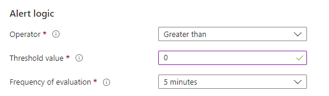
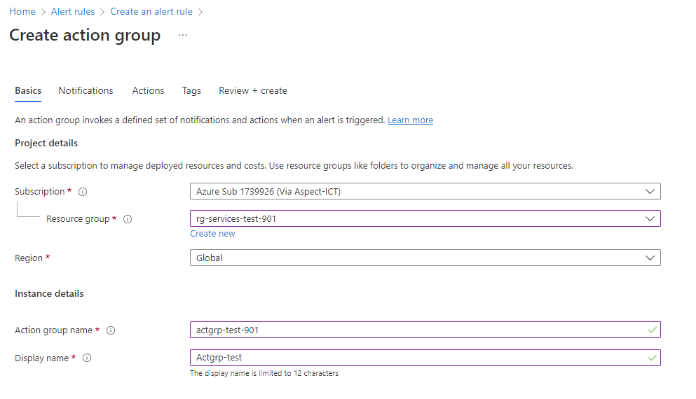
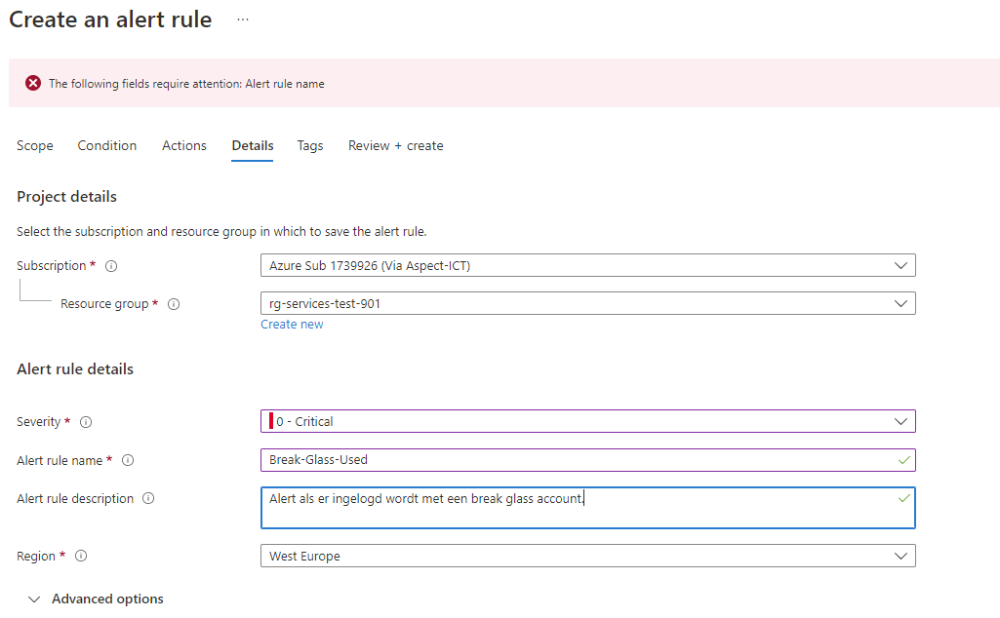

Aanmaak Azure break glass accounts
Handleiding aanmaak break glass accounts
Maak een gebruiker met een complexe gebruikersnaam en een complex wachtwoord met als domein xxxxx.onmicrosoft.com (bijv brkgluser23459873234@montaservicetest.onmicrosoft.com).
Geef deze gebruiker de rol "Global Admin" en maak deze gebruiker owner van de subscripties.
Exclude deze gebruiker van de MFA policy.
Leg het wachtwoord in de kluis en sla dit niet op in Passwordstate.
Maak nog een gebruiker aan op dezelfde manier en koppel deze aan een FIDO2-beveiligingssleutel.
Bewaak de aanmeldings en auditlogboeken.
Achterhaal het object-id van de gebruiker.
Ga naar Log Analytics en creëer een "alert rule" met de "signal name" "Custom Log Search". Voeg de query toe met het object-id van het break glass account.
// Search for a single Object ID (UserID)
SigninLogs
| project UserId
| where UserId == "b98441bc-73a7-4015-9ee1-6ef0a5108dc8"
Stel de alert logica als volgt in:

Creer in het volgende scherm een action group  Vul geen extra actions in .
Creëer een alert rule. 
Bijlage 1 Break Glass Account Best Practices in Azure AD
Break Glass Account Security Guidelines
Should have a complex, hard to guess, username.
Must have a complex password, preferably split into two parts,
stored in envelopes at two different secure locations in fireproof
safes.There should be a list of allowed admins who can use the break glass
accounts. These admins should, of course, also hold the Global
Admin role under normal circumstances.Be sure to monitor break glass accounts in Azure AD sign-in logs and
audit logs and act on any unexpected activity.
Break Glass Account Configuration Guidelines
Must have the Global Administrator role assigned permanently.
Must have password set to never expire.
Must not have MFA configured.
Must be excluded from ALL Conditional Access policies.
Must not be assigned to a specific individual.
Must be a cloud-only account.
Should use the tenants *.onmicrosoft.com domain (to avoid domain and federation issues).
Must not be federated.
Should not be synchronized with on-prem AD.
Should not be connected with any employee-supplied mobile phones or
hardware tokens.
Documentation and Validation
The emergency routine should be well documented and always kept current.
Finally, the accounts and emergency routines should be verified and
practiced at least every 90 days of all approved admins. Make sure
to put this in the calendar!
Bijlage 2 Links naar documentatie
Beheeraccounts voor noodtoegang beheren - Azure AD - Microsoft Entra | Microsoft Learn